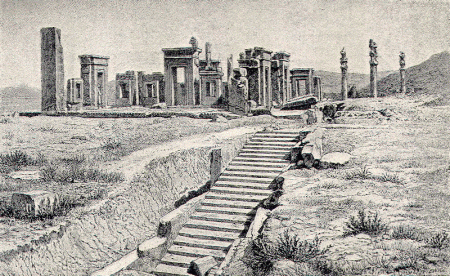
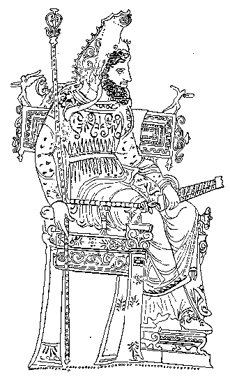

From time to time, in the course of the world's history, the title of Great has been given to some monarch who has distinguished himself, either by the splendour of his victories, or by the value of his services to his fellowmen. We speak, for example, of Alexander the Great, and amongst English kings, of Alfred the Great.
There was however one empire, that of Persia, in which the title of Great carried with it no distinction, for in this country every king was called the Great King, not because it was supposed that his nature was more noble or his actions more splendid than those of other men, but because he was lord of a vast empire, greater than had ever yet been seen upon the face of the earth.
The Persian empire had been founded about a hundred and fifty years before the time of this story, by Cyrus the Great, who, having succeeded by inheritance to the double throne of Persia and Media, had conquered many of the surrounding nations. The kings who came after him extended their sway farther and farther, until at last, in the time of Darius I., there were no less than fifty-six countries subject to the Great King of Persia.
The Great King was looked upon as little less than a god. Every one who entered his presence threw himself flat upon the ground, as if in the presence of a divine being. It was supposed that a mere subject must of necessity be struck to the earth with sudden blindness on meeting the dazzling rays of such exalted majesty.
The court of the Great King was on a scale of the utmost splendour. His chief residence was the city of Susa, but in the hot season he preferred the city of Ecbatana, which was higher and cooler, and he also stayed occasionally at Babylon and at Persepolis. At each of these places there was an immense palace, adorned with every conceivable magnificence, and from the discoveries recently made among the ruins of Persepolis we can form some idea of what the palace of the Great King of Persia must have been like.

RUINS OF THE PALACE OF PERSEPOLIS.
The palace of Persepolis stood upon a terrace above the rest of the city, and all round it were houses of a simpler kind, used for lodging the soldiers and the civil and military officers who were attached to the King's person, and who ate daily at his expense. There must, in all, have been about fifteen thousand of them, including the ten thousand soldiers of the royal body-guard.
The gate of the-palace was approached by two superb flights of marble stairs, which joined in front of the entrance, and were so wide that ten horsemen could ride abreast up each side. Within the gate was a square building with a front of more than two hundred feet. The entrance-hall was a magnificent room, with a roof supported by a hundred pillars of richly carved stone, and on either side of it were other rooms with beautiful pillars. In all directions lovely colours and ornaments of gold and silver met the eye. The walls were covered with gigantic sculptures, representing the Great Kings Darius I. and Xerxes, who had built the palace, with attendants, both in time of peace, and at war with monsters and wild beasts. Together with the sculptures were inscriptions which can be read even now. This is a translation of the beginning of one of them: "I am Darius, the Great King, the King of kings, the King of these many countries." Among the sculptures is one that represents Darius seated on his throne, with a slave standing behind him, holding in his hand a fan with which to keep off the flies. The mouth of the slave is covered with a bandage, for it would have been considered a profanation to allow the air breathed by so august a sovereign to be polluted by the breath of a slave. Another sculpture represents an audience given to an ambassador, who, for the same reason, holds his hand before his mouth in the presence of the King.
When the Great King, gave an audience he sat upon a golden throne with a canopy above him which was held in its place by four slender pillars of gold adorned with precious stones. The whole effect was so dazzling that it would be hard to imagine anything more splendid, even in a fairy tale. On these occasions, and on all feast days, the King appeared in a purple robe, with a magnificent mantle of the same purple colour, richly embroidered. Round his waist was a golden girdle, and from it there hung a golden sabre, glittering with precious stones. On his head was the tiara, a sort of pointed cap worn by the Persians. Only the King might wear his tiara standing upright, all subjects were obliged to press down the point, or arrange the cap in some other way. The colour of the royal tiara was blue and white, and it was encircled with a golden crown. The full value of the gala costume was reckoned at nearly 300,000l. of our money.

THE GREAT KING IN GALA DRESS.
It was only on rare occasions that the King walked, and then only within the precincts of the palace; on these occasions carpets were spread before him, on which no foot but his might tread. When he rode beyond the palace, the right of helping him into his saddle was bestowed as a mark of great distinction upon one of the most highly-favoured lords of the empire. More frequently, however, the King preferred to drive in his chariot, and at these times the road he intended to take was specially cleansed, and strewn with myrtle as if for a festival, and filled with clouds of incense. It was lined, moreover, with armed men on both sides; and guards with whips prevented any approach to the royal chariot. If a distant journey had to be undertaken, no less than twelve hundred camels and a whole multitude of chariots, waggons and other means of transport were required to convey the Great King, his countless attendants, and his endless baggage.
At a distance of about two miles from Persepolis was a great pile of marble rock, and here Darius I. caused his tomb to be made whilst he was yet alive. So steep and inaccessible was the cliff that the only way of placing the body in the tomb prepared for it was by raising it from below with ropes. Afterwards three other royal tombs were hewn out of the same rock, and three more in another, not far off.
All Persians were allowed to have many wives, and the Great King had often a very large number; Darius, for example, had three hundred and sixty—almost as many as there are days in the year. Yet only one of these was the Queen; all the rest were so far beneath her that, when she approached, they had to bow themselves to the ground before her.
Like all Persians, the King only ate once a day, but the meal lasted a very long time. He sat at centre of the table, upon a divan framed in gold and covered with rich hangings. At his right hand was the Queen-Mother; at his left, the Queen-Consort. The princes and intimate friends of the King, who were called his "table-companions," usually took their meal in an adjoining room. On feast days, however, they were permitted to dine in the royal presence, and on these occasions, seats made of cushions or carpets were placed for them upon the floor.
The power of the Great King was bounded by no law; from his will there was no appeal. He was a despot in the strictest sense of the word, and his subjects were all alike his slaves, from the lowest to the highest, not even excepting his nearest relations. In the whole world there was only one person whom he was required to treat with any kind of respect; this was his mother.